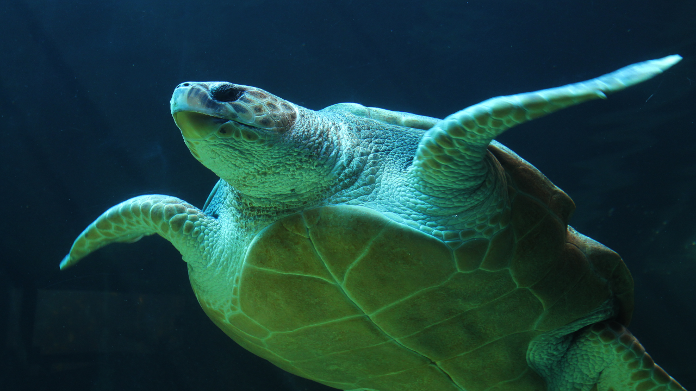

Uma tartaruga é um réptil cuja característica que mais se destaca é a presença de uma carapaça que serve para proteger os órgãos. Desta forma, a olho nu, só se consegue observar a cabeça, as patas e a cauda do animal, já que o resto está coberto pela carapaça.

Imagen de uma Tartaruga Marinha
Quantas Especies De tartarugas Existem?
Existem mais de 300 espécies de tartarugas no mundo, incluindo 250 espécies aquáticas (que vivem em água doce, zonas húmidas e manguezais), 60 espécies terrestres e apenas 7 que vivem no mar.
Clique Abaixo Para Ver Quais Especies Existem No Brasil